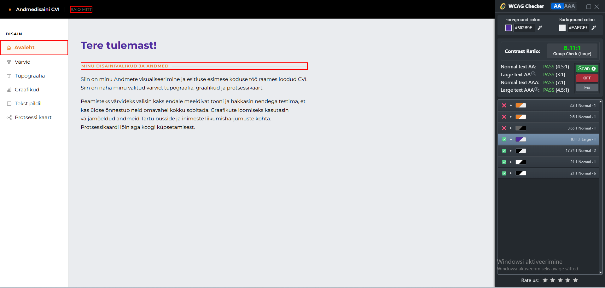
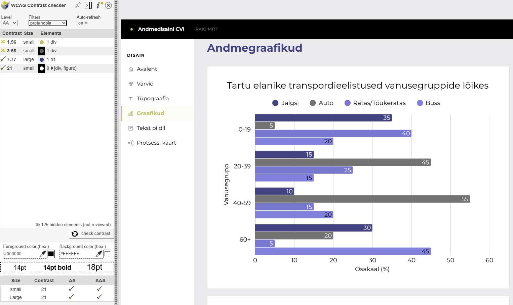
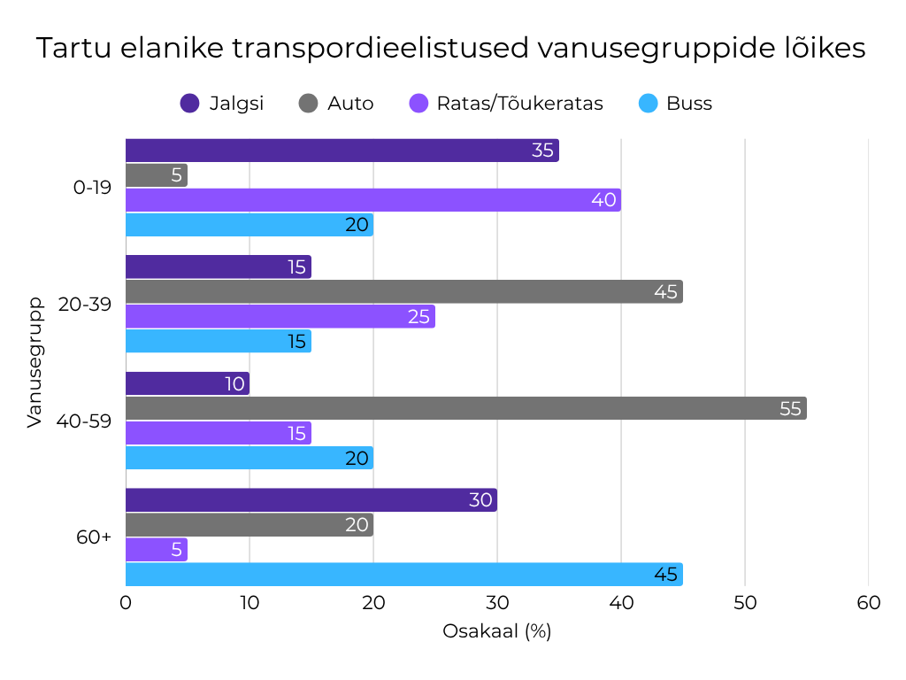
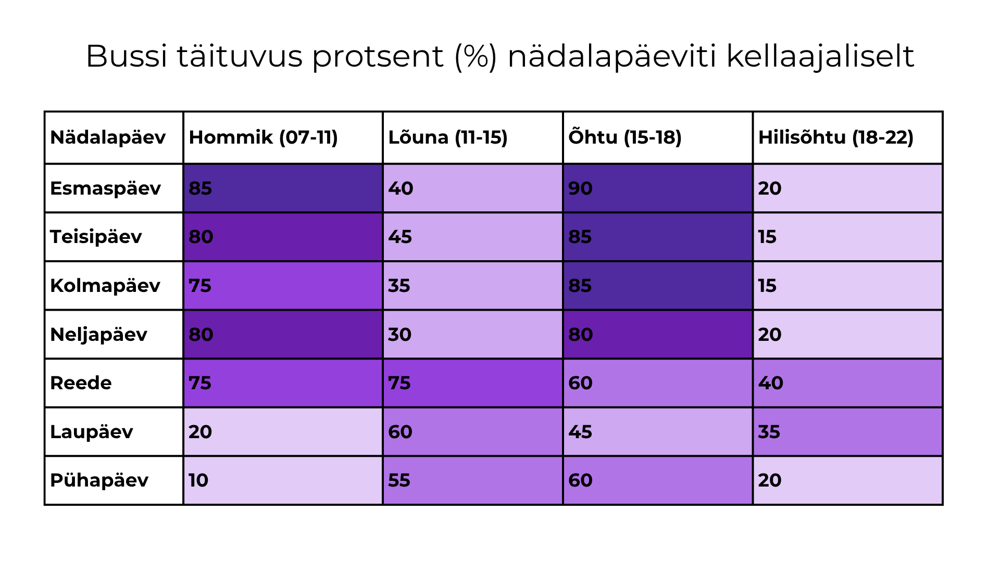
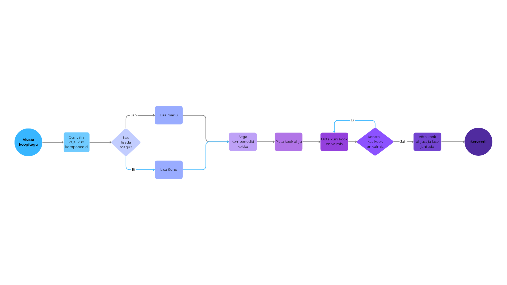

Tere tulemast!
Minu disainivalikud ja andmed
Siin on minu Andmete visualiseerimine ja esitluse esimese koduse töö raames loodud CVI. Siin on näha minu valitud värvid, tüpograafia, graafikud ja protsessikaart.
Peamisteks värvideks valisin kaks endale meeldivat tooni ja hakkasin nendega testima, et kas üldse õnnestub neid omavahel kokku sobitada. Graafikute loomiseks kasutasin väljamõeldud andmeid Tartu busside ja inimeste liikumisharjumuste kohta. Protsessikaardi lõin aga koogi küpsetamisest.
WCAG testimise tulemused
WCAG testimiseks oma veebilehel, kasutasin Google Chrome'i laiendust nimega "WCAG Contrast Checker" https://wcag-contrast-checker.com/welcome/. Selle abil testisin oma valitud värvide kontrastsust. Tulemustest nägin, et oleksin saanud valida paremate kontrastidega värvid, kuid kuna minu valitud värvid olid mulle endale meeldivad ja loetavad, otsustasin neid siiski kasutada. Tulevikus võiksin proovida leida sarnaseid toone, kuid parema kontrastsusega.

Lisaks kasutasin ka teist WCAG testimise tööriista, et testida oma valitud värve värvipimeduse suhtes. Tulemustest nägin, et värvid läksid värvipimedusfiltritega väga sarnaseks ja tabelid muutusid peaaegu loetamatuteks.

Värvid
Põhivärvid
Kategooriline palett
Pidev palett · oranž
Lahknev palett
Tüpograafia
Kirjasuurused ja stiilid
Tekst pildil
Minu kujundusvalik
Valisin selle toreda pildi Tartu linnaliini bussist ja kuna meenus, et hiljuti oli autovaba päev, tundus see pilt siia sobivat. Lisaks oli pildil ka vaba ruumi kuhu teksti paigutada. Teksti püüdsin paigutada nii, et see jäeks võimalikult loetav. Soovisin kasutada pildil oma CVI põhivärve, kui alumine oranz tekst ei tahtnud kuidagi nähtav jääda. Seega kasutasin oranzi värvi heledamat tooni (#fdf3ea) ja tegin pilti tumedamaks, et tekst oleks paremini nähtav. Peamisel tekstil kasutasin oma CVI põhivärvi, lillat (#502b9f). Teksti fontiks jäi Montserrat.
Andmegraafikud


Protsessi kaart
